Lawn grass views - a overview of the best grasses for the lawn
Lawn grass rids the area of weed, gives it aesthetics. In addition, it performs practical functions - produces oxygen, saturating the air with freshness, absorbs exhaust gases, dust, cleaning the space. Let's take a closer look at the main types of lawn grass with photos and names.
Tall lawn grasses
This category includes plants exceeding 1 m in height. They are distinguished by thick stems, light-loving. Such lawn grass is attractive at a rapid rate of growth. If it is necessary to green the site in a short time, it is a suitable choice. But at the same time it is necessary to be ready for frequent care of plants. Tall varieties mow several times a month. Consider the most popular representatives of the species.
The shield is narrow-haired
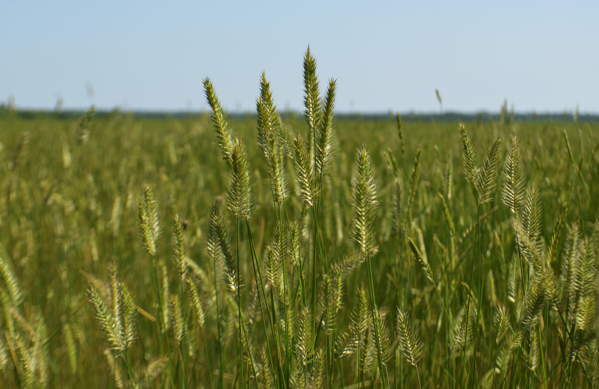
The stems are about 1 m high and have a powerful root system that reaches 3 m deep. He shows all his qualities for 3-4 years. The shield grows in the form of a bush and is not used on high quality lawns. Its main advantages are:
Although the plant is unpretentious, but it grows better on fertile lands, with regular watering.
Creeping wheatgrass

A perennial plant from the Myatlic family. Stems reach a height of 0.6-1 m. Roots superficial, sometimes grow in length by 15 m. Pyry breeds seeds and rhizomes. Grass is unpretentious, survives even in unfavorable conditions. Top features:
A single planting of the lawn is enough, then the wheatgrass reproduces independently.
A fireless

The perennial plant, reaching a height of 1.2 m. zlaq is characterized by a huge rhizome, going to a depth of 2 m. Used for grass-type lawn. For better survival, it is recommended to sow a footless bonfire in early May. Top benefits:
The flowering period of the cereal is the beginning of July. The grass is unstable for repeated mowing.
Vicolist Esparcet
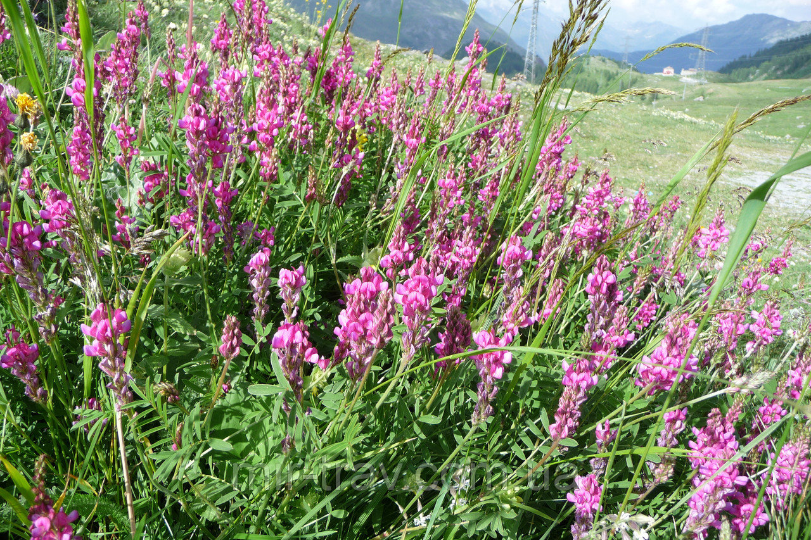
Perennial plants with a developed root system. One bush gives a lot of shoots, the height of which reaches 0.9 m. Leaves 6-14-paired, elliptical form. Esparcet blooms with short egg-shaped brushes of bright pink color in May-June. The main features of the plant:
Esparcet is beautifully combined with other meadow herbs.
Semi-top lawn grasses
This group includes medium-sized lawn grasses. The height of the stems from 50 cm to 1 m. Their main advantage is good bushiness. After cutting the plants grow, come to life, creating a dense carpet. Used for meadow lawns. They planted large areas, combined with garden flowers.
Yellow alfalfa
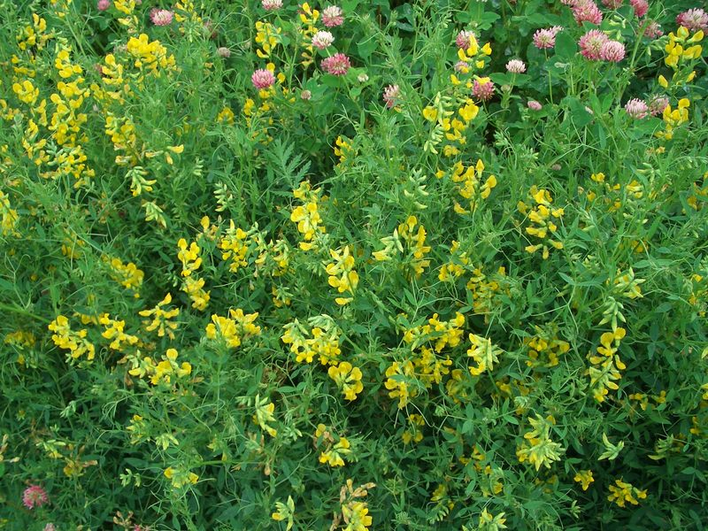
Unpretentious, perennial plant with a powerful root system. From mid-July to August, the alfalfa turns the site into a beautiful yellow carpet. The inflorescences are oval, the flowers are small. The main features of the grass:
Lucerne enriches the soil with useful trace elements, evens its composition. Often the plant is used to improve the quality of the site, to prepare for planting other crops.
Meadow Timofeivka
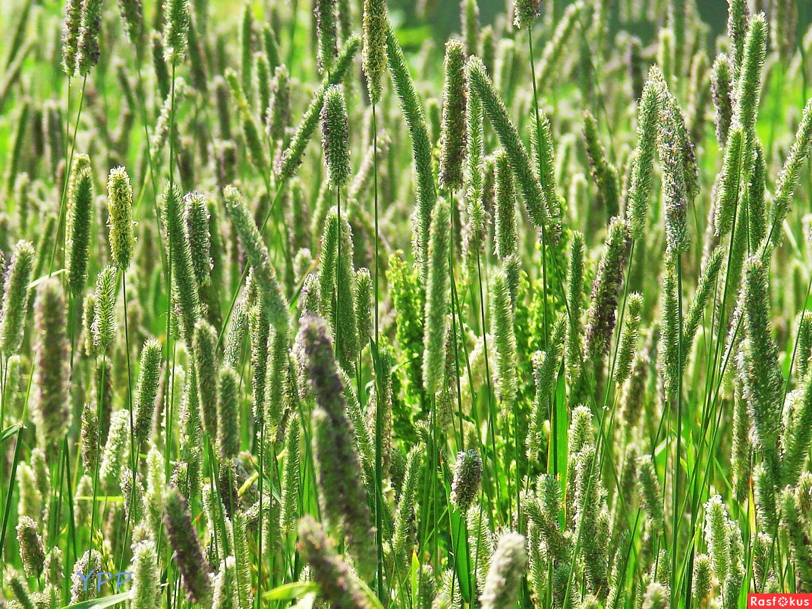
The plant is suitable for sowing problem areas where other herbs do not linger. Timofeevka feels great both in marshy and mountainous areas. The variety has the following features:
The ty hold is frost-resistant. It starts to turn green immediately after the snow has come down.
Pastoral Raigras
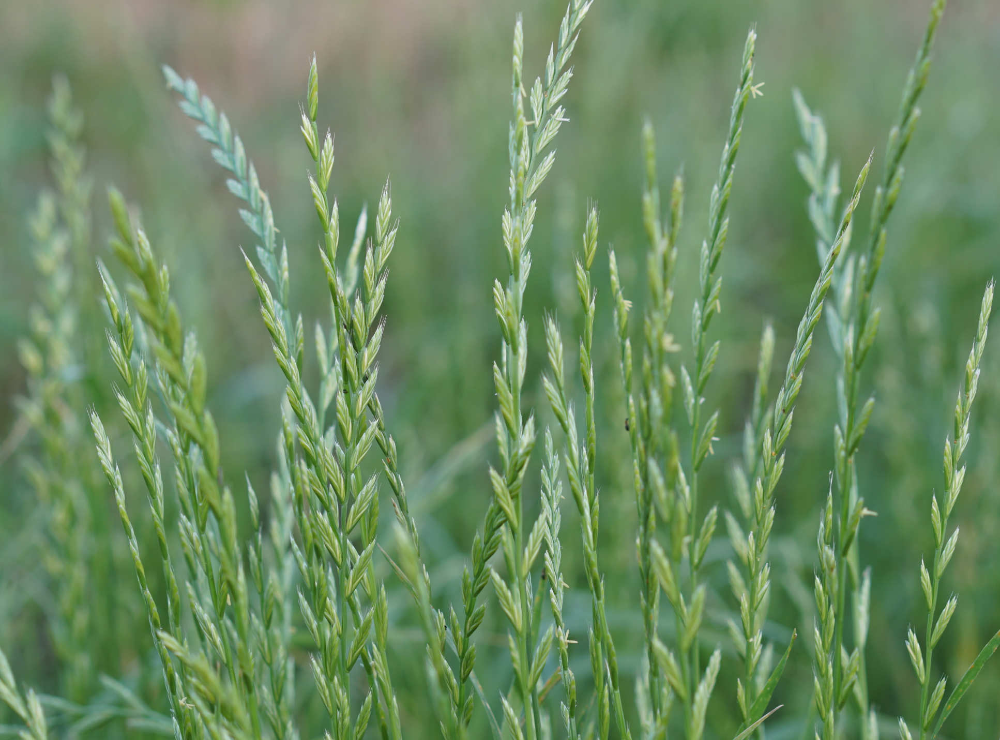
A widespread plant that can grow even in Western Siberia. The height of the stems does not exceed 0.5 m. Raigras is characterized by narrow, bright green leaves, up to 30 cm long. Inflorescences in the form of loose spikes. The main features of the grass:
An important advantage of ryegras - within a month after sowing forms a thick grassy. The plant is added to the mix for sports and decorative lawns.
Medium-grown lawn grasses
In this group are listed plants, the height of which varies between 50-70 cm. They form, so-called, the second tier. The main features of the grass: thin stems; strong bushiness after mowing; comparative unpretentiousness in care.
Medium-grown grasses create a dense squat lawn. Consider the most popular representatives of the species.
Red oatmeal
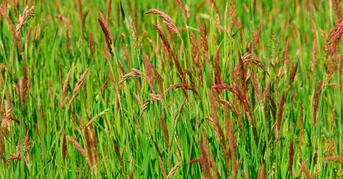
A plant with a creeping rhizome system. Thanks to this, it quickly aligns the lawn, forming a thick, smooth grass, hiding not out. The main features of oatmeal:
Grass develops well on loams and snug soils. He likes to moisturize, but also endures drought. It has an average growth rate. When sowing in autumn, the seeds rise on the 8th day.
Meadow bluegrass
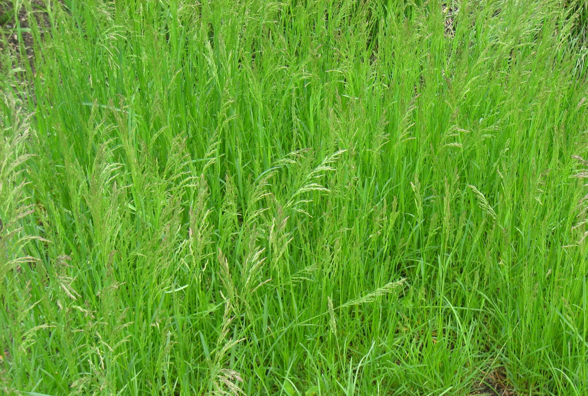
Perhaps the best among lawn grasses to create dense, smooth carpets. A special feature of mint is the creeping rhizome. Thanks to him, he independently fills all the noty and irregularities on the site, forming a thick, solid turf. Key features:
Grass is moisture-loving, better developed on fertile, aerated soils. Resistant to trampling, frost-resistant. It is recommended to sow bluegrass in autumn. The shoots appear on the 10th day. The plant develops slowly, so often it is not necessary to cut it.
Polevica
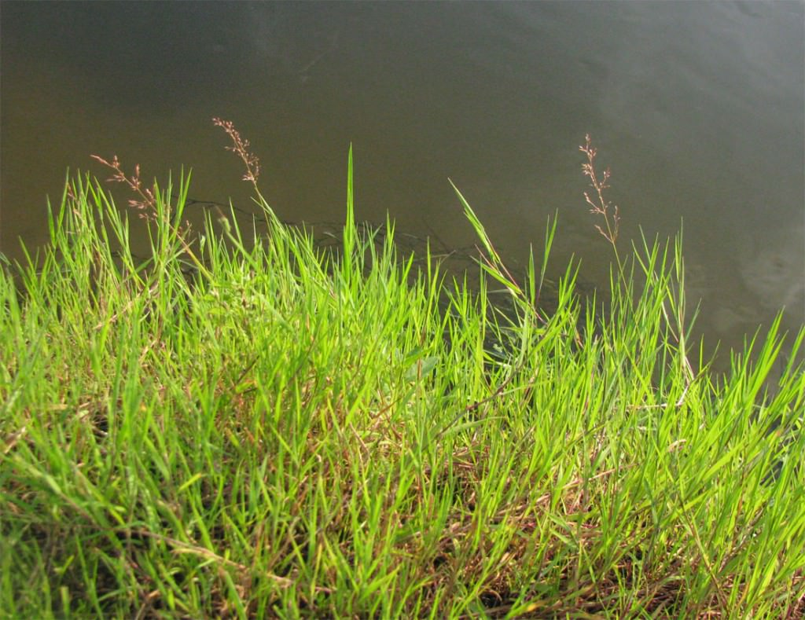
There are subtle and escaping varieties of plants. The thin field is distinguished by a creeping, thinned rhizome. It forms a strong and elastic turf. Key features:
The field is thin, frost-resistant. The resulting splash fills itself, but very slowly. The escaping field has short, light green leaves. Thanks to the sliding shoots quickly fills the site. Creates a low, soft grass.
Low-grown lawn grasses
Dwarf plants create a dense short carpet. You'd think it was grass that didn't require a haircut. But that's not entirely true. It's slowly growing, but it's growing. But the dwarf lawn does not need frequent haircuts and watering, so it is ideal for busy or rarely coming to the country people. To create dense, elastic turf, it is recommended to mow plants at an altitude of 4-5 cm.
For low-grown lawns use the above field, bluegrass meadow, red ovs. They usually seed as a mixture rather than a monoculture. Low-grown grass is expensive, because it is very popular among summer cottagers. So consider a worthy replacement for classic lawn plants. These soil cover varieties look spectacular, quickly green the territory.
White Clover

If you choose which is better grass, not in need of a haircut, the list will be led by a low-grown clover. His shoots are snub on the ground, slightly raised. The distinctive features of the
Clover is good for a haircut, but can do without it. It does not need frequent watering or fertilization. Despite the delicate foliage, it is resistant to trampling.
Barvinok
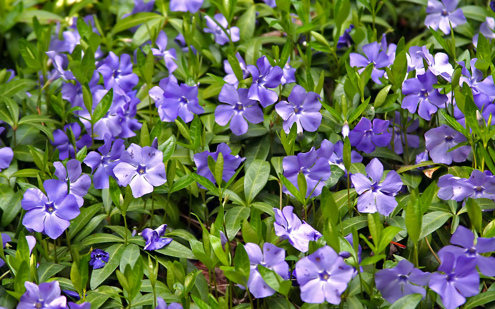
The evergreen plant pleases with bright colors all year round. Barvinok perennial, resistant to low temperatures, develops well in the sun and in the shade of trees. Its important quality is the suppression of weeds. The characteristics of the variety are as follows:
To create a lawn it is necessary to plant a lot of rooted cuttings. Barvinok quickly takes root and grows thanks to the sliding shoots. It can be planted both on flat areas and on the slopes.
Thyme
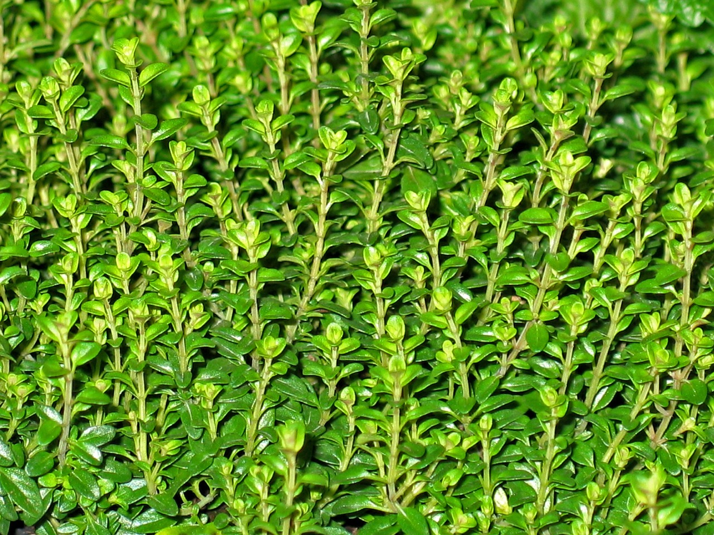
Lawns can be not only beautiful, but also fragrant. The thyme dernaines are created slowly, but they are durable. The plant is a semi-flower with hamlet shoots. They can be polegable and vertical. The main feature of the grass:
Thyme develops best on fertile, open, sunny areas. Drought-tolerant, unpretentious in cultivation. For the best view, it is recommended to carry out a compacting pruning every spring.
Root lawn grasses
For the duration of life, adaptability to different types of soil, demanding to go is influenced by the development of the root system. Therefore, there is a classification of lawn grass by the type of roots. The root variety has a superficial location. The growth is shallowly penetrates into the ground. Ground-strewn shoots form knots. Roots are growing rapidly, contributing to the formation of many new shoots. This has kept the thick grassy preserved for many years.
The meadow foxtail
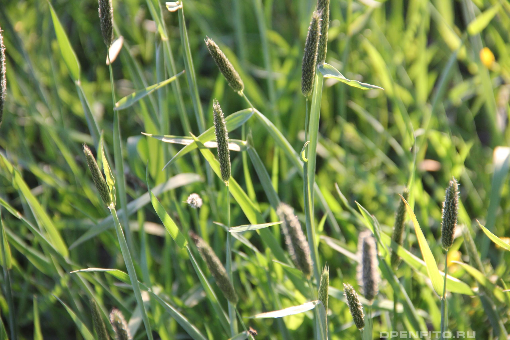
The rhizome type belongs to the above-examined plants: red oatmeal, bluegrass, polenta. Also, this species includes meadow foxtail. It is a perennial, reaching a height of about 1 m, and under favorable conditions and 1.2 m. The main features of the grass:
It is best to combine foxtail with creeping wheatgrass, escaping field, bluegrass. The plant feels good in wet areas. It can be planted in marshland, near reservoirs. The foxtail does not tolerate drought, but frostbite. In one place grows up to 10 years. It breeds with seeds.
Rychocoust lawn grasses
This category includes plants with a superficial root system. They have one knot of susting, but that does not prevent them from creating a thick grass cover. The above-ground bush is usually sprawling, gives numerous shoots. Consider the most popular members of the group.
Meadow oatmeal
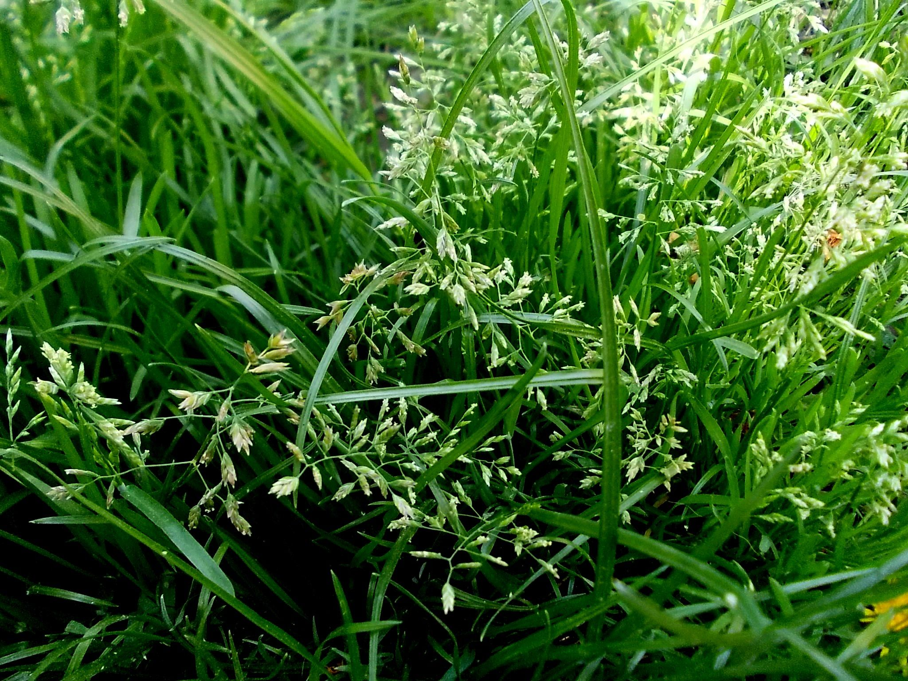
Grass creates a smooth, fluffy lawn already in the first year of life. A month after planting, it completely landscaping the site. Ovsys can not be called grass, which does not require care, but it is still able to survive the harsh winter without loss, withstands a long stagnation of moisture, can do without watering in the drought for a long time. The main features of the variety are:
The more often to carry out a haircut, the thicker the grassy, because of frequent mowing increases the number of shoots. The green mass grows very quickly.
Grebennik ordinary
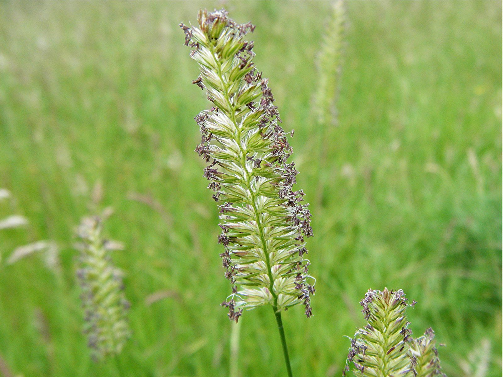
Ideal for Moorish lawn. Also, the plant can often be bought as part of a mixture for ordinary and sports lawns. It is not recommended to plant a comb together with a field and oatmeal, as plants conflict with each other. The main features of the grass:
The comb is resistant to trampling. Remains green until late autumn. Immediately after the snow cover pleases with a green carpet. It develops well on sandy soils, endures drought.
Rootless wheatgrass
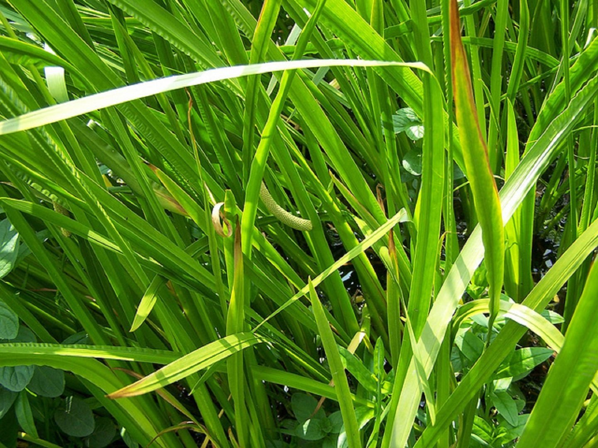
The rhywk-hustov grass, which is distinguished by the absence of rhizomes. The main feature is the looseness of inflorescences. Wheatgrass is relatively unpretentious, feels good on fertile soils, black soils. It can't withstand prolonged flooding. Top features:
When sowing the lawn, the consumption of 1 m^2 wheatgrass is about 15-20 g. It quickly rises, in a short time completely greening the site.
Core root lawn grasses
Plants form lush bushes. They look beautiful, do not require special care. As the name implies, their root system is pivotal. The dominant escape is superficial, but the young growths develop on the core root. Over time, it thickens and strengthens, venturing into the soil. Consider the most popular members of the group.
lotus corniculatus
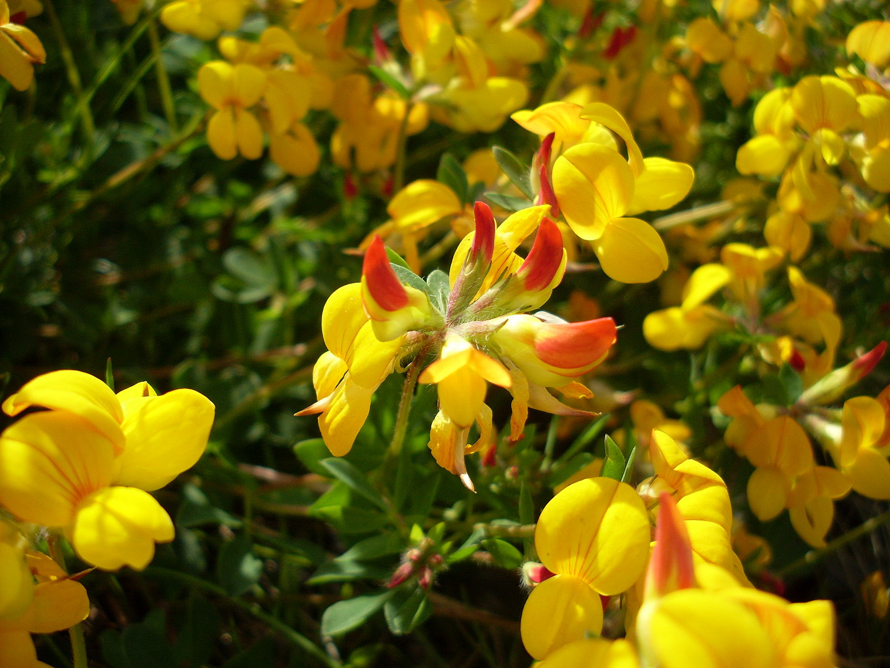
A unique plant suitable for the most difficult areas on which other herbs do not take root. It is used to create meadow-type lawns. Lyadvanets will not only green the territory, but will also enrich poor soils with phosphorus, potassium, calcium, nitrogen. The main characteristics of the variety:
The horned lydevan feels good in the shade and in the open sun. Frost-resistant, not afraid of trampling, can do without watering for a long time. It is connected to alfalfa, clover.
Blue alfalfa
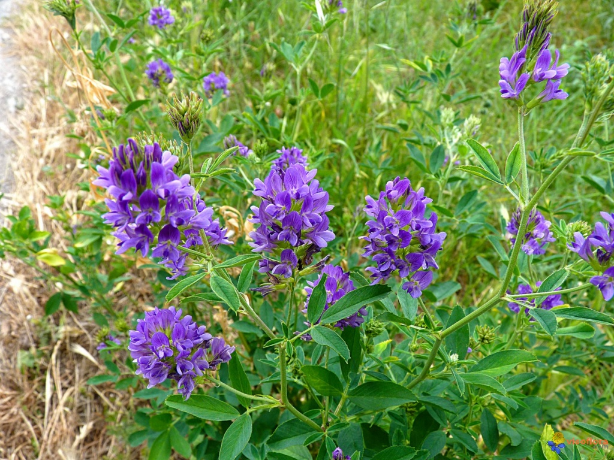
This is an excellent ciderate, which is used not only for landscaping the site, but also for the enrichment of the composition of the soil. Blue alfalfa can be used as a monoculture or as part of grass mixtures. The main features of the culture:
Reviews of summer cottages warn that alfalfa does not develop well in the shade, as well as on heavy, salted clay soils. Therefore, it is desirable to choose loose, open areas. The plant does not like overhydration. Grows well in combination with a campfire, oatmeal.
Red Clover
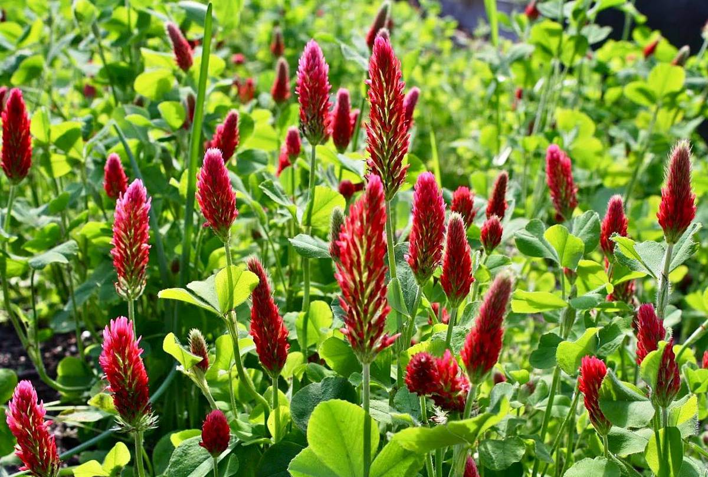
Unlike the creeping white clover, the red shamrock creates a green carpet that requires a haircut. In the long absence of mowing the plant reaches 60 cm in height. The main features of the grass:
Clover is best multiplied by seeds. The flowering period begins in July. The plant is unpretentious, but still develops better on sunny areas with neutral or low-acid soil. He likes moderate watering. The sun and water accelerate the growth of clover, contribute to its spread and recovery.